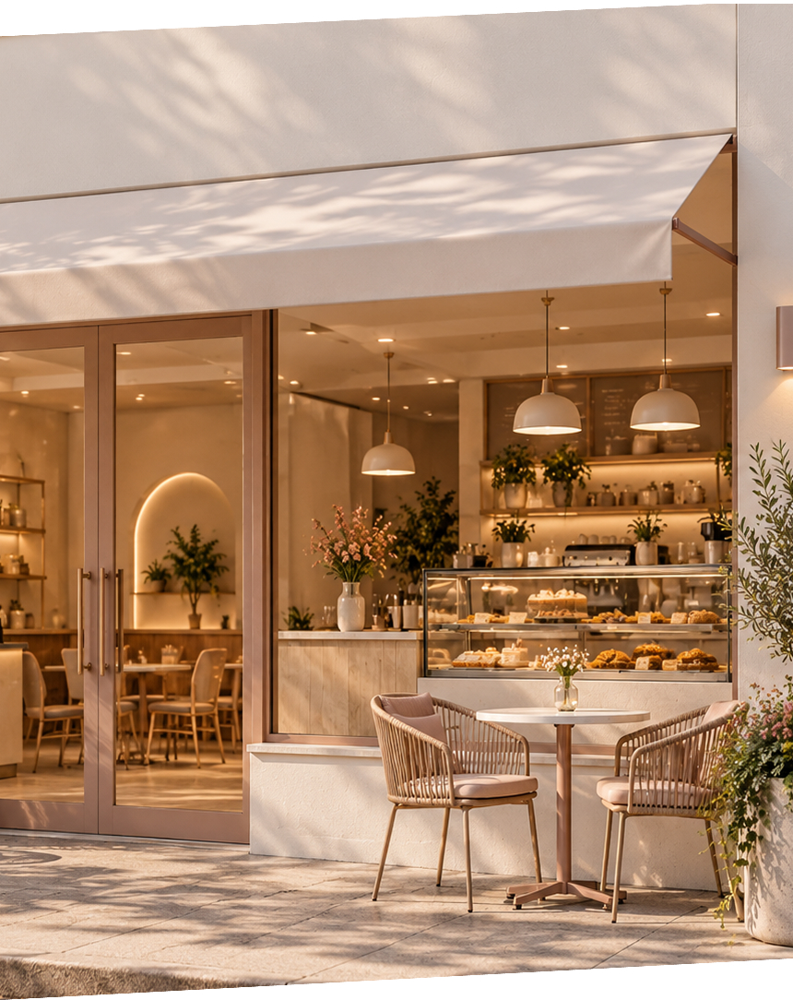

Seu dia merece uma pausa extraordinária.
Cafés especiais, sabores irresistíveis e momentos que merecem ser apreciados sem pressa.
Conheça nosso cardápio

Cafés especiais, sabores irresistíveis e momentos que merecem ser apreciados sem pressa.
Conheça nosso cardápioA Cafeteria Aurora nasceu da ideia de transformar pequenos momentos em experiências especiais.Acreditamos que uma boa xícara de café pode tornar o dia mais leve, aproximar pessoas e criar memórias que ficam. Por isso, buscamos unir sabores irresistíveis, um ambiente acolhedor e o cuidado em cada detalhe, para que cada visita seja única.
Entre em contato com a Cafeteria Aurora pelo e-mail @cafeteriaaurora.com.br ou pelo telefone (11) 3456-7890.